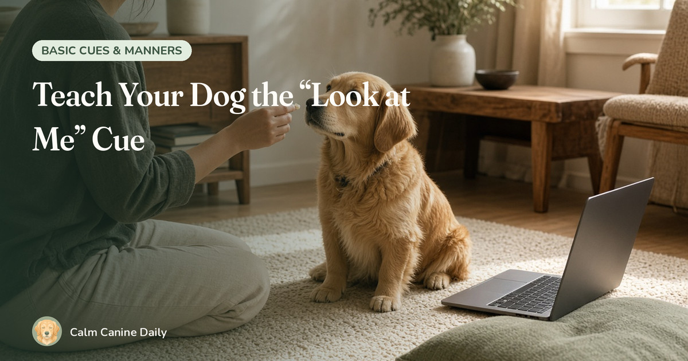

Teach Your Dog to Look at You: The “Look at Me” Cue That Helps on Walks

The short answer. To teach your dog “look at me,” start indoors. Hold a treat at their nose, lift it to your eyes, mark and pay the glance. Add the cue “look at me” (or “watch me”) once the glance is reliable. Practice in the yard, then on a quiet sidewalk. On real walks, cue before the distraction. If they cannot look, you are too close — add distance.
A reliable look-at-me is the check-in you use before the squirrel, the other dog, or the UPS truck. This page is that transferable attention cue. It is not the same as the 3-second window check-in, and it is not the full loose-leash walking plan. It is the focus skill that supports both.
This is a researched how-to, not a hands-on trial of this cue on a panel of dogs, and not a promise that one word will fix leash reactivity.
Educational content only. Some links on this page are affiliate links. If you purchase through one, we may earn a commission at no extra cost to you. We do not impersonate or speak for any course creator.
About this article. Educational tips from Calm Canine Daily for everyday US owners. This is not veterinary advice, a diagnosis, or a promised result. We are not a certified training practice and we do not claim CPDT or DVM credentials. If you are worried about a bite risk or a situation you cannot manage safely, pause and get qualified in-person help.
Who this plan is for: everyday owners who want a simple attention cue at home and on walks, and whose dog can still take food in a quiet setting. Who this is not for: a dog who is lunging, snapping, or making you feel unsafe on the leash. That needs a qualified in-person professional (CPDT-KA or CBCC-KA are one useful filter). A cue and an online course are not enough in that case.
Key takeaways
- “Look at me” and “watch me” are the same idea. Pick one cue and stick with it.
- Teach it in the kitchen first, where you can win, then take it outside in small steps.
- Use the cue before a distraction hits, not after your dog has already lunged.
- If they cannot look at you, add distance or go back to an easier place. Do not repeat the cue into the air.
In this article
- Why a check-in cue is worth more than “no” on the sidewalk
- What not to do
- Teach “look at me” in the kitchen
- Take it to the yard, then a quiet sidewalk
- Use it before distractions, not after
- When to get extra help
- FAQ
Why a check-in cue is worth more than “no” on the sidewalk
“No,” “hey,” and a yank on the leash all arrive late. By then your dog is already staring at the squirrel or the other dog. A look-at-me cue is useful because it asks for a job you can pay: glance at you, then keep walking or take a treat.
Attention is also the foundation under other skills. A dog who will look at you is easier to call back and easier to walk on a loose leash. The cue does not replace a well-fitted no-pull harness if you need management on today’s walk. It is the focus skill; the harness is the hardware.
What not to do
Don’t repeat the cue. Saying “look at me, look at me, look at me” teaches your dog that the first word does not matter. Say it once. If they cannot respond, you are too close to the distraction, or the cue is not finished yet. Move away and try again.
Don’t use it only when you are already frustrated. If the word only appears in a tense voice after a lunge, it becomes a warning, not an invitation. Practice when the walk is easy, so the cue still means “good things happen when you look.”
Don’t stare them down. This is a treated glance, not a dominance exercise. Soften your body, mark the look, and pay.
Teach “look at me” in the kitchen
- Stand or sit in a quiet room with a handful of small, tasty treats.
- Hold one treat at your dog’s nose, then slowly lift it up to the bridge of your nose or between your eyes.
- The moment they glance at your face — even a flick — mark it (“yes”) and pay. You can deliver the treat from the hand that lured, then switch to paying from the other hand once they understand.
- After several easy reps, wait a beat without the lure and pay a voluntary glance.
- When the glance is reliable, add the cue just before they look: “look at me” or “watch me.” Pick one. Both are common in US training; the skill is the same.
Keep sessions short. Five or ten good reps is enough. If they jump for the treat, hold it closer to your face and pay only the glance, or start with the treat already at your eyes so they do not have to travel as far.
Take it to the yard, then a quiet sidewalk
When the kitchen is easy, move to a slightly harder room, then a fenced yard. Ask for the look, pay, and release them to sniff again. You want the cue to feel like a worthwhile pause, not the end of all fun.
Then try a quiet sidewalk, at a quiet time of day. Start with the leash short enough that you can keep them from rehearsing a lunge, and use better treats than you used in the kitchen. If they cannot look at you at all, the environment is too hard. Go back to the yard or cross the street and try a greater distance from the trigger.
A front-clip harness can make that classroom more manageable while the cue is still new. It is not a substitute for the cue.
Use it before distractions, not after
On a real walk, scan ahead. When you see the other dog, the skateboard, or the UPS truck before your dog locks on, ask for the look, pay, and move on or create distance. That is the walk-saving use of the cue.
If they have already lunged, you missed the window. Do not chant the cue. Get distance, let them come down, then ask for a look when they can actually do it. Pair this with the loose-leash plan if pulling is the main problem, and with the window check-in if the same dog also parks at the glass at home.
When to get extra help
Get a veterinarian involved if attention or reactivity changed suddenly, or if you suspect pain. A focus cue is not a substitute for veterinary care.
Get a qualified trainer or behavior professional involved if leash reactivity feels unsafe — lunging, snapping, or a situation you cannot manage with distance. An article is not enough in those cases, and neither is an online course.
FAQ
How do I teach my dog to look at me?
Start in a quiet room. Lure a treat from your dog’s nose to your eyes, mark the glance, and pay. When that is easy, add the cue “look at me” or “watch me” just before they look. Then practice in the yard and on a quiet sidewalk, and use the cue before distractions, not after.
Is “look at me” the same as “watch me”?
Yes, in everyday US training they are the same attention cue. Pick one phrase and have the whole household use it. The skill is the glance at your face, not the exact wording.
How do I get my dog’s attention on walks?
Teach the cue indoors first, then in the yard, then on a quiet sidewalk with better treats. On real walks, ask for the look before your dog locks onto a trigger, and pay it. If they cannot look, add distance. A no-pull harness can help with management while the cue gets stronger.
When should I use the look-at-me cue?
Use it as a check-in before a distraction, at a curb, or anytime you need their eyes for a second. Do not save it only for emergencies, and do not repeat it after they have already lunged. Practice on easy walks so the word stays positive.
Why does my dog ignore me as soon as we go outside?
The sidewalk is harder than the kitchen: more smells, more movement, more payoffs that are not you. That usually means the cue is not finished at that difficulty yet, not that your dog is being stubborn. Go back a step, raise the value of the treat, and start farther from the distraction.
Related guides
- Why Your Dog Pulls on the Leash
- How to Stop Your Dog From Barking at the Window
- Best No-Pull Dog Harnesses for Leash Pullers
- How to Teach a Dog to Come When Called
- Brain Training for Dogs review
- More cues and manners guides
- More leash and walks guides
- Get the free 7-Day Calm Dog Checklist
Sources
Vendor facts about Brain Training for Dogs, including Preschool games described as targeting and eye contact (and the Airplane Game), the advertised $67 price, and the 60-day guarantee, are from the official pages as checked on November 21, 2026: braintraining4dogs.com/get-btfd and braintraining4dogs.com. Confirm current terms at checkout.